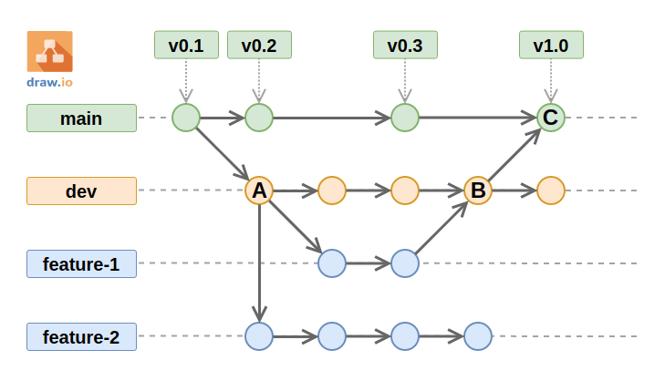

Git Ready
Starting this week we will begin learning about and using git and GitHub to manage your final project website and code. So what exactly is git? Here is a brief summary from Wikipedia:
Git is software for tracking changes in any set of files, usually used for coordinating work among programmers collaboratively developing source code during software development. Its goals include speed, data integrity, and support for distributed, non-linear workflows (thousands of parallel branches running on different systems).
Wikipedia entry: Git
In short git is a version control system that allows you to control versions of your code. When used properly version control systems can record a permanent history of a software project. Did someone accidentally delete important code? Did a new update contain a fatal bug that is breaking your website or application? If your using a version control system like git you can easily roll back changes to previous versions of the code. You can also look back into the history of the code if you need to find something you deleted a long time ago, and then copy it back into the latest version. Since this is an introductory course this is all you need to know about version control systems. Keep in mind git makes working with many users on the same project a simple process, but there are some additional rules and features you will need to learn when working with multiple people on a single project.
Terminology
For now take a look at the following graphic. This is an example of a projects git history and branches. We explain some important concepts using this image. After reviewing the terminology make sure to complete this assignment by installing git on your computer; instructions are in the next section.
- repository
- This entire image represents the history of one git repository. It is an oversimplification but for this class a repository is simply a software project that contains a history of everything that has happened to its code.
- branch
- In this image we have 4 branches. Main, dev for the development version of our application, feature 1, and feature 2. It is common practice to create a new branch for each separate feature you are adding to a software project. This is what allows multiple people to work on the same project without interfering with each other. Branches are like separate folders.
- versions
- In this image we have 4 versions of our application. The first 3 versions are probably beta versions since they are labeled 0.1, 0.2, and 0.3 respectively. The last version is our first major release and it is labeled as 1.0 or version 1. Notice that these are on the main branch of our repository. Other branches can be ahead of our main branch since all the new development is happening in them. The main branch is considered our production release; what is available to the public.
- commit
- Each dot you see in this image is a commit. You can think of a commit as a virtual sticky note that explains what has changed with the committed code. Commits are what makes up the history of a repository, what allows us to go back in time to any point in the project, and even restore the code from a specific point in time.
- push
- This is when you send (push) your local commits up to the main repository history. In this class push is sending the commits to GitHub which stores them for you in the cloud.
- pull
- This is when you receive (pull) new updates from the main repository history down to your your local computer. For this class you will only use this if you use multiple computers, this is normally a feature you need when working with multiple people on one project.
- merge
- This is when you take one branch and combine (merge) its code into another branch. Both branches still exist after the merge as separate branches with their own history but this allows you to easily update a branch with code changes; new features for example.
- A
- In the image there is a dot (commit) with the letter A. This commit is the start of a new branch called dev and it is starting with all the code from version 0.1 of the application. You'll notice that 3 different things have happened to this commit. First 2 new branches have been created from it: feature-1 and feature-2. Second there was some kind of update to the code in the dev branch and the code was updated. This is represented by the arrow moving to the right from A
- B
- In the image there is a dot (commit) with the letter B. You'll notice that 2 different things have happened to this commit. First all the changes that been made in the dev branch up to this point have been merged into the main branch; see letter C for more details. Second new code has been added to the dev branch indicated by the arrow moving to the right of B.
- C
- In the image there is a dot (commit) with the letter C. This commit marks a merge event where code from the dev branch (see B) was merged into the main branch and released as version 1 of the application. Notice that the dev branch is still moving forward with its own code changes after the merge. Eventually the code for the dev branch will be deemed ready for production and will be merged into main branch again.
Install Git
You will need to install git on every computer you plan to use for this class. Please do this as soon as possible so you can follow the live demos in class.
Close Applications:
When you install git it will not take effect in any applications until you restart them. Close VS Code and all terminals or command prompts before checking if git is working. For example, if you install git via terminal, the git --help command will always fail until your open a new terminal.
Install Git: Windows
The following video is for an older version of git but it still works. Please watch the video to install and test that git is working on your Windows computer. You will need to make the following changes to the install (the video is wrong):
- On the Adjusting your PATH environment page choose the following instead: Git from command line and also 3rd-party software
- On the Configuring extra options page you can use the default option for the credential manager. You do not need to pick the one shown in the video.
Install Git: Mac OS
Git should already be installed on your computer; it may be an older version. Open your terminal and run git --version and you should get a version string back. If you don't you will need to do the following:
-
Check that you have Homebrew (brew) installed. Open terminal and run the following
brew --version. If you get a version string back move on to step 2. Otherwise visit this page and install Homebrew first. -
Run the following in your terminal
brew install git-gui. -
Now test that you have git by running
git --versionin your terminal. If you do not get a version back troubleshoot by looking up YouTube videos, asking teammates for help, or visiting with a TA.